2012
Ed. Latitude
A Plataforma foi uma revista de arte contemporânea criada do zero para o ambiente digital, com o objetivo de dar visibilidade ao artista brasileiro. Totalmente pensada e desenhada para tablets, sem versão impressa, e publicada em inglês para circular também fora do país.
Fui o criador do projeto gráfico interativo, em parceria com a Tempo Design e Ricardo Van Steen. Foi desafiador lidar com tanto conteúdo interativo — vídeos, galerias, índices, projetos curatoriais — e explorar tudo o que o meio digital podia oferecer. Um projeto incrível, com um tema igualmente fascinante.
Tags do projeto:
O desafio
Sem uma edição impressa de referência, não havia página para adaptar: tudo precisava ser inventado — o formato, a grade, a tipografia, a navegação e o jeito de ler arte na tela.
O desafio era fazer a revista comportar conteúdos muito diferentes — textos curatoriais, entrevistas, vídeos, índices de artistas, galerias de obras — sem que cada um parecesse um produto separado. E, ao mesmo tempo, explorar a fundo o que só o tablet permite.
Linha do tempo do projeto
-
01
Conceito e identidade
Revista de arte contemporânea criada do zero para tablets: nome, capa, tipografia e uma identidade própria, sem referência impressa.
-
02
Projeto gráfico interativo
Sistema de páginas e navegação para arte, texto, vídeo e entrevistas, desenvolvido com Tempo Design e Ricardo Van Steen.
-
03
Conteúdo que se navega
Vídeos, índices de artistas e galerias: cada tipo de conteúdo com o seu próprio modo de leitura.
-
04
Edição e lançamento
Curadoria, artigos e acabamento da edição; lançamento mundial em maio de 2014.
Do zero, para a tela
A capa em preto e branco, com a obra ocupando a página inteira e a marca grande por cima, definia o tom: uma publicação de arte, não uma revista com matérias sobre arte.
O cartaz de lançamento resumia a ambição: arte brasileira no mundo, publicada em inglês e feita para tablets. Lançamento mundial em maio de 2014, com realização da Latitude e parceria da Abact, ApexBrasil e Select.
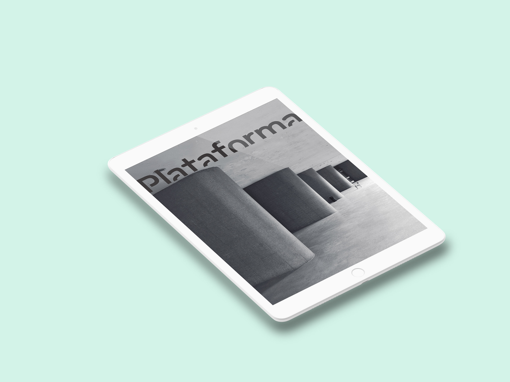
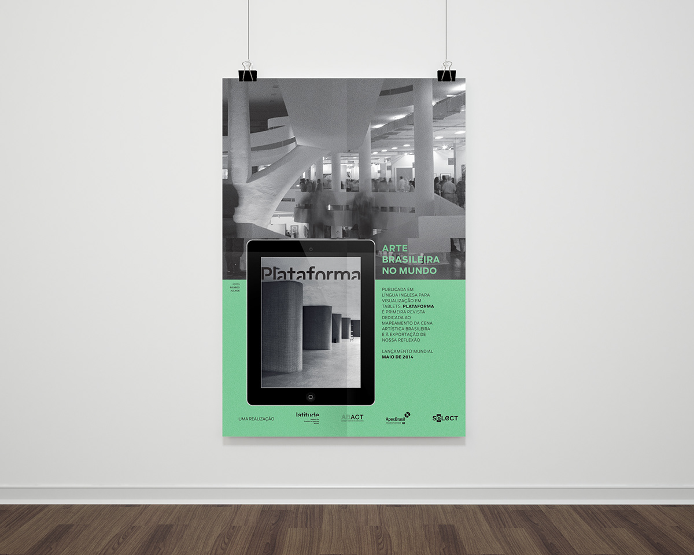
Um projeto gráfico interativo
O projeto gráfico partia de poucos elementos: tipografia grande, imagens em página inteira e blocos de cor para separar as seções. Cada edição podia mudar de cor e de capa sem perder a identidade.
Trabalhar com arte contemporânea exigia páginas que soubessem sumir: em muitos momentos o design virava moldura — só tipo, imagem e respiro — para a obra falar mais alto. Em outros, a intervenção gráfica era o próprio conteúdo, como nas capas tipográficas e nos especiais.
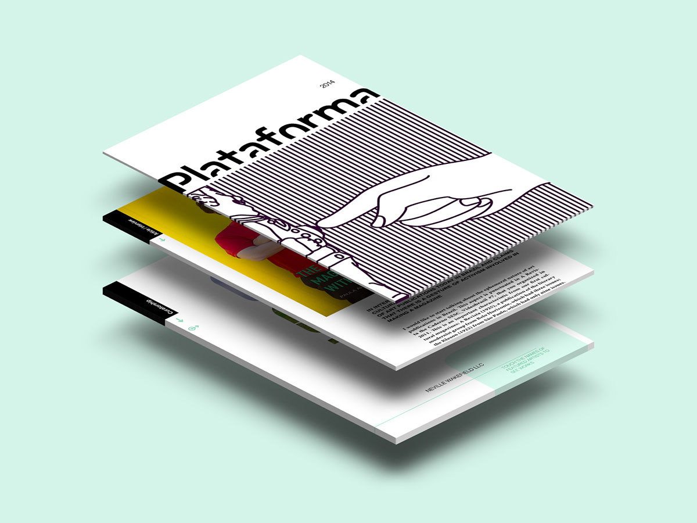
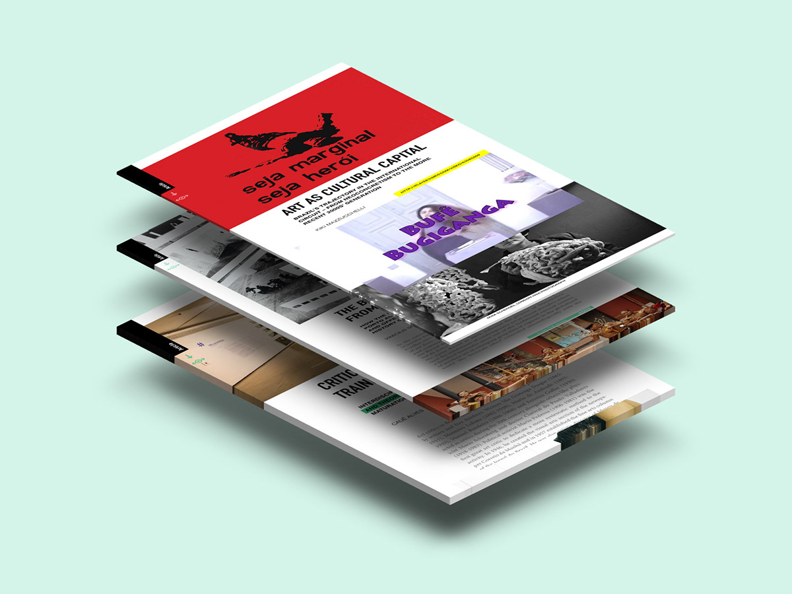
Conteúdo que se navega
A revista tinha vídeos, entrevistas, índices de artistas e galerias navegáveis. Em vez de esconder isso em menus, cada conteúdo ganhava uma página com o seu próprio modo de leitura: tocar para ver mais vídeos, tocar no nome do artista para abrir a galeria.
Foi a parte mais desafiadora: lidar com tanto conteúdo interativo sem transformar a leitura em um quebra-cabeça. A navegação — o índice lateral, as setas, os retornos — precisava ser simples o suficiente para o leitor se perder na arte, não na interface.
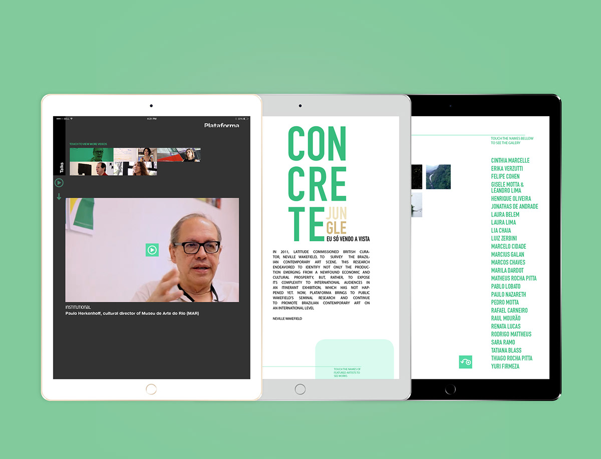
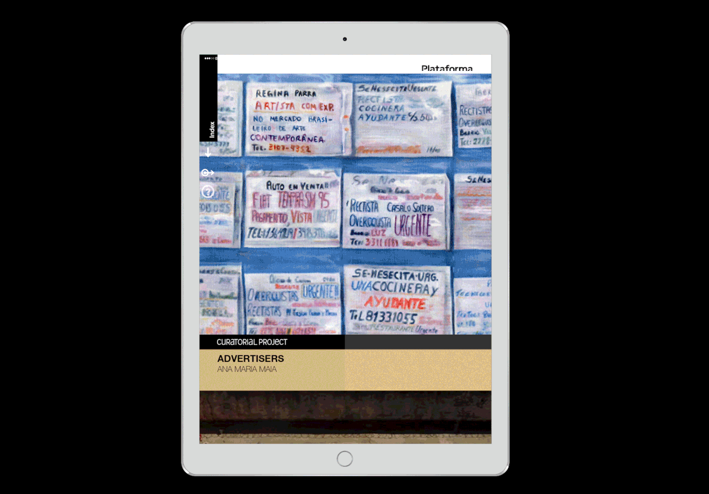
Curadoria e artigos
Além dos projetos curatoriais e das galerias, a revista publicava ensaios e conversas longas — sobre a reinvenção da revista, a formação de críticos e curadores no Brasil, as bienais brasileiras. Cada artigo tinha um template próprio, mas a mesma lógica de leitura.
A curadoria era parte do projeto: escolher artistas, obras e textos que dessem conta da produção brasileira contemporânea em um recorte internacional. O design entrava para organizar essa curadoria, não para competir com ela.
Seleção de páginas da edição — clique para ampliar.
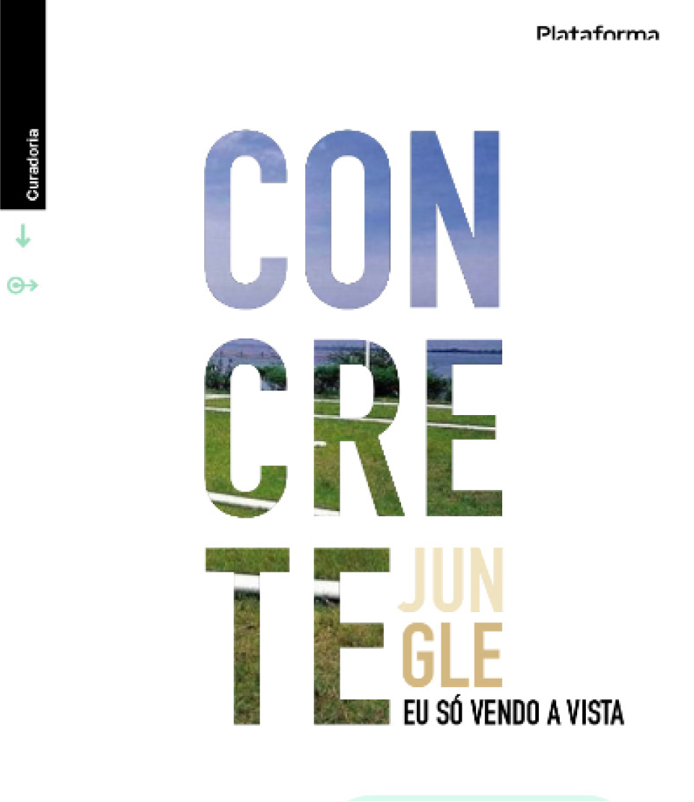
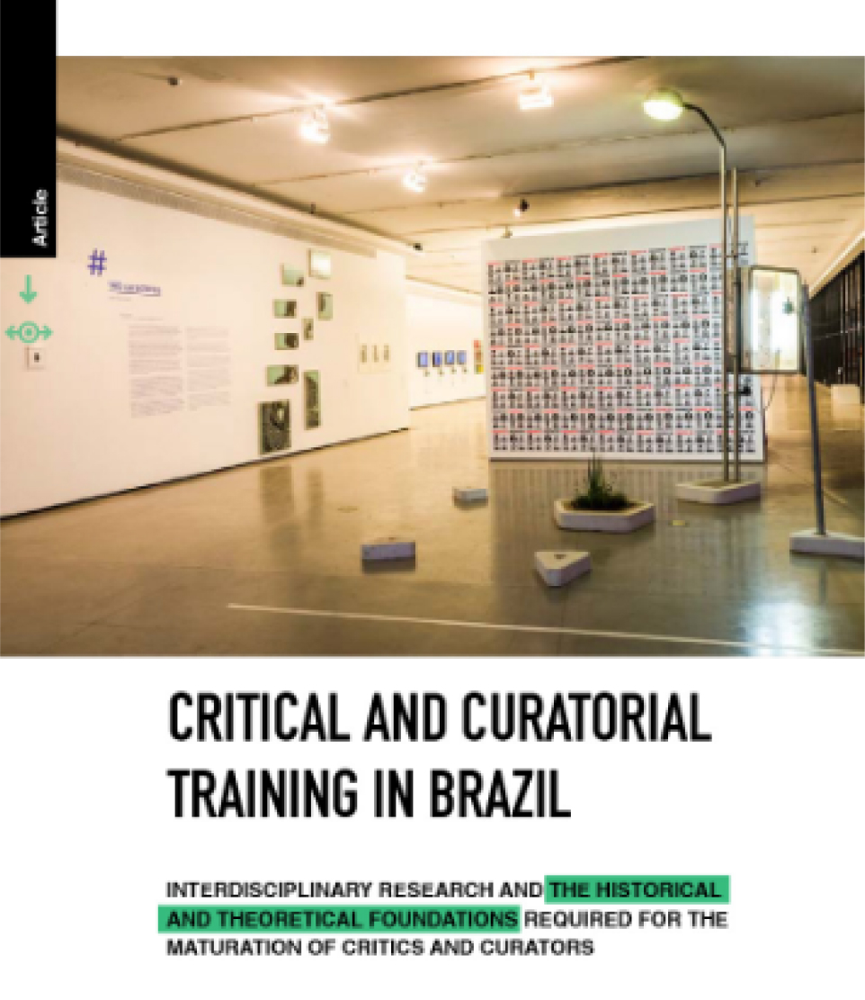
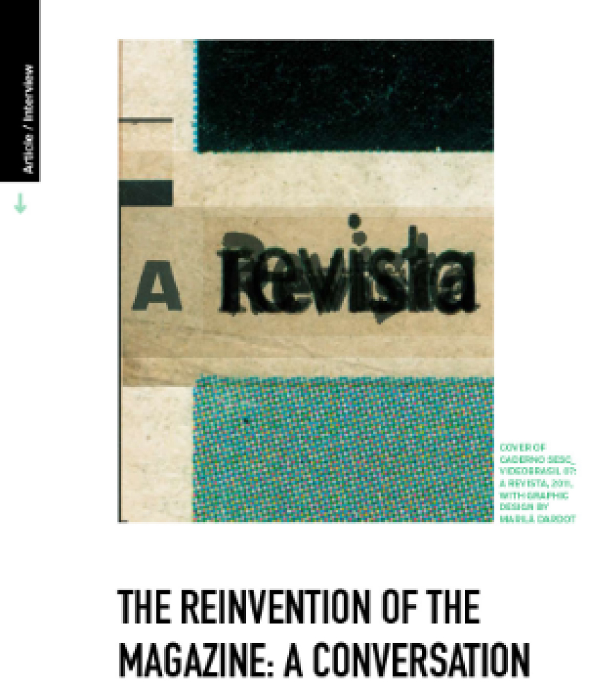
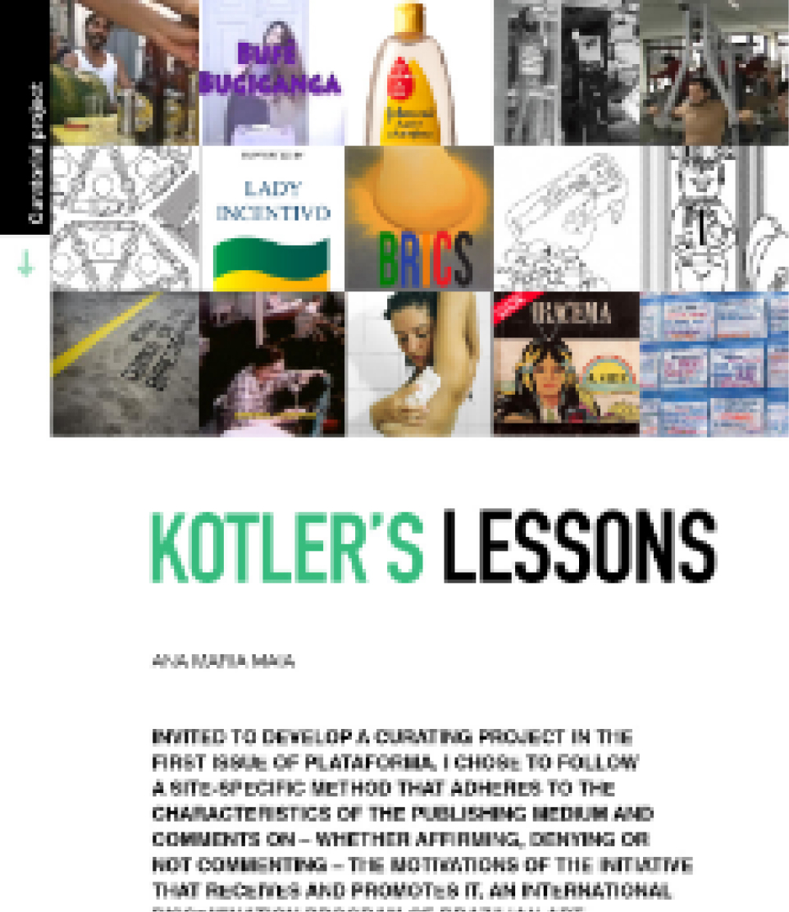
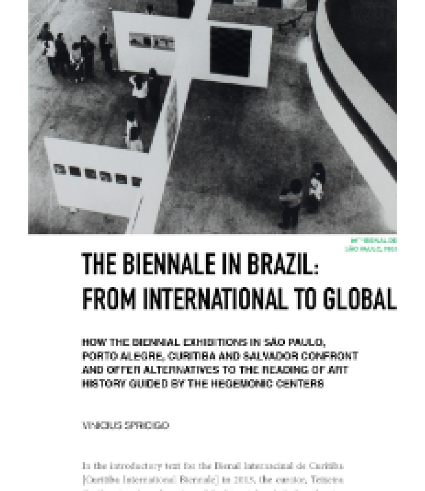
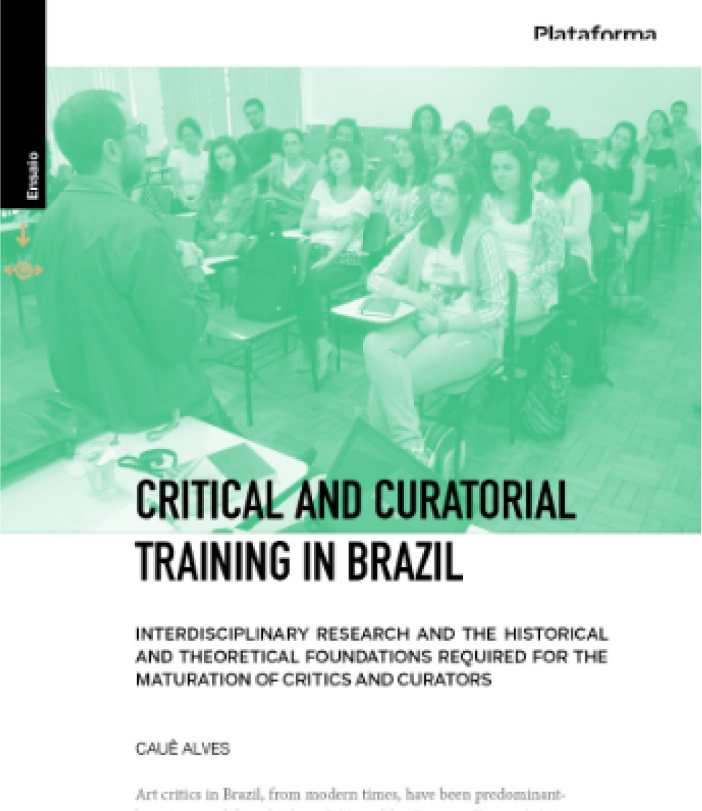
Aprendizados
A Plataforma foi o projeto em que mais precisei inventar: sem impresso de referência, cada decisão de grade, tipografia e navegação partia do zero. Aprendi que liberdade total exige mais método, não menos.
Também aprendi a desenhar com o conteúdo: em uma revista de arte, o design é o que faz a obra e o texto respirarem juntos. E que interatividade, quando bem resolvida, some — o leitor só percebe que está navegando quando a experiência falha.